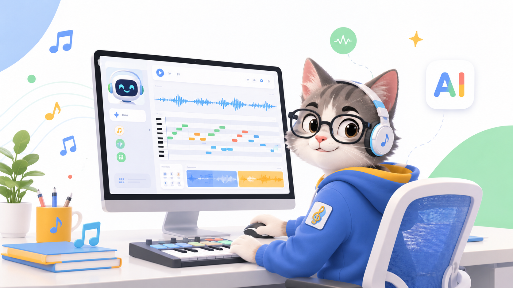
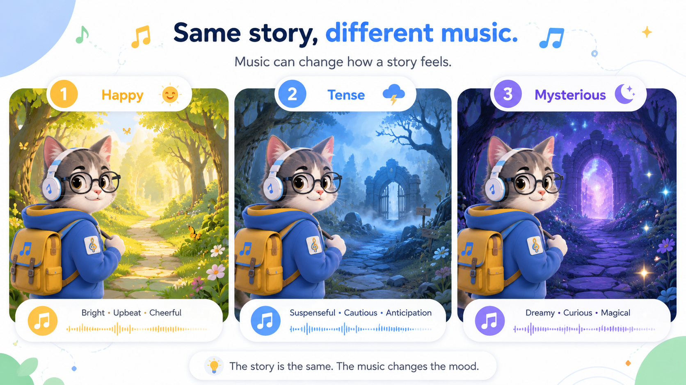
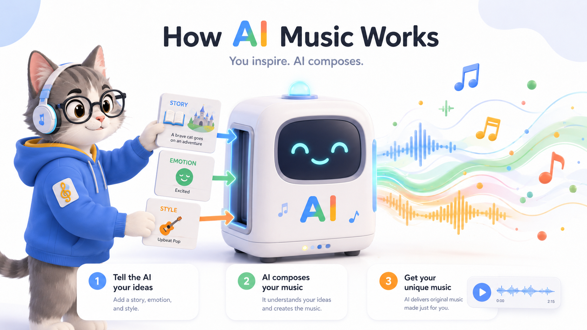

♪ AI音乐小作曲家 v4.2｜歌词模板 + 编辑器版
Google-style 浅色科技风 + JS 拆分修复
从故事到歌曲
让孩子设计声音
这版把脚本拆到 app.js，修复第 5 步提示词框为空的问题。课堂流程是：先听示例、写故事、选音乐按钮、设计结构，最后复制到豆包或海绵音乐。
打开页面后，第 5 步应该自动出现默认提示词。

课堂示例音乐链接
课堂上可以直接点击播放前几首，每种情绪播放 10–20 秒，让孩子猜感觉。右侧插图帮助孩子理解：同一故事，音乐一变，感觉也会变。

老师建议：同一个故事画面，连续播放开心、紧张、神秘三种音乐，让孩子观察：画面没变，故事感觉变了。
第一步：选择故事
音乐要服务故事。先确定主角、场景和发生了什么。
第二步：选择音乐类型与歌词
支持纯音乐，也支持带歌词歌曲。小朋友可以自己写歌词，也可以让 AI 帮忙补歌词。

如果要做下一堂 AI MV，建议先用“纯音乐 BGM”。如果要做班级作品展示，可以选择“带歌词歌曲”。
第三步：音乐按钮
用简单按钮控制 AI 音乐的方向。右侧示意图帮助孩子理解“音乐按钮实验室”的感觉。
第四步：设计音乐结构
音乐像作文，也有开头、发展、高潮和结尾。
第五步：生成提示词
复制到豆包或海绵音乐使用。
当前提示词由页面自动生成，可以直接编辑；复制时会复制编辑框里的内容。
作品卡
正在生成作品卡……